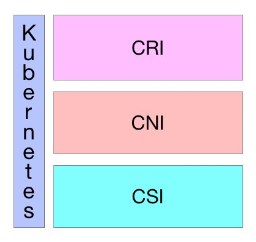

开放接口
Table of Contents
Kubernetes作为云原生应用的基础调度平台，相当于云原生的操作系统，为了便于系统的扩展，Kubernetes中开放的以下接口，可以分别对接不同的后端，来实现自己的业务逻辑：
- CRI （Container Runtime Interface）： 容器运行 接口，提供 计算 资源
- CNI （Container Network Interface）： 容器网络 接口，提供 网络 资源
- CSI （Container Storage Interface）： 容器存储 接口，提供 存储 资源
以上三种资源相当于一个分布式操作系统的最基础的几种资源类型，而Kuberentes是将他们粘合在一起的纽带

CRI
CRI中定义了 容器 和 镜像 的服务的接口，因为容器运行时与镜像的生命周期是彼此隔离的，因此需要定义两个服务。该接口使用 Protocol Buffer ，基于 gRPC ，在Kubernetes v1.10+版本中是在 pkg/kubelet/apis/cri/runtime/v1alpha2 的 api.proto 中定义的
CRI架构
Container Runtime实现了 CRI gRPC Server ，包括 RuntimeService 和 ImageService ：
- 该gRPC Server需要监听 本地的Unix socket
kubelet 则作为 gRPC Client 运行

启用CRI
除非集成了rktnetes，否则CRI都是被默认启用了，从Kubernetes1.7版本开始，旧的预集成的docker CRI已经被移除
要想启用CRI只需要在kubelet的启动参数重传入此参数： –container-runtime-endpoint 远程运行时服务的端点：
- 当前Linux上支持unix socket
- windows上支持tcp
例如：unix:///var/run/dockershim.sock、 tcp://localhost:373，默认是unix:///var/run/dockershim.sock，即默认使用本地的docker作为容器运行时
CRI接口
Kubernetes 1.9中的CRI接口在api.proto中的定义如下：
// Runtime service defines the public APIs for remote container runtimes service RuntimeService { // Version returns the runtime name, runtime version, and runtime API version. rpc Version(VersionRequest) returns (VersionResponse) {} // RunPodSandbox creates and starts a pod-level sandbox. Runtimes must ensure // the sandbox is in the ready state on success. rpc RunPodSandbox(RunPodSandboxRequest) returns (RunPodSandboxResponse) {} // StopPodSandbox stops any running process that is part of the sandbox and // reclaims network resources (e.g., IP addresses) allocated to the sandbox. // If there are any running containers in the sandbox, they must be forcibly // terminated. // This call is idempotent, and must not return an error if all relevant // resources have already been reclaimed. kubelet will call StopPodSandbox // at least once before calling RemovePodSandbox. It will also attempt to // reclaim resources eagerly, as soon as a sandbox is not needed. Hence, // multiple StopPodSandbox calls are expected. rpc StopPodSandbox(StopPodSandboxRequest) returns (StopPodSandboxResponse) {} // RemovePodSandbox removes the sandbox. If there are any running containers // in the sandbox, they must be forcibly terminated and removed. // This call is idempotent, and must not return an error if the sandbox has // already been removed. rpc RemovePodSandbox(RemovePodSandboxRequest) returns (RemovePodSandboxResponse) {} // PodSandboxStatus returns the status of the PodSandbox. If the PodSandbox is not // present, returns an error. rpc PodSandboxStatus(PodSandboxStatusRequest) returns (PodSandboxStatusResponse) {} // ListPodSandbox returns a list of PodSandboxes. rpc ListPodSandbox(ListPodSandboxRequest) returns (ListPodSandboxResponse) {} // CreateContainer creates a new container in specified PodSandbox rpc CreateContainer(CreateContainerRequest) returns (CreateContainerResponse) {} // StartContainer starts the container. rpc StartContainer(StartContainerRequest) returns (StartContainerResponse) {} // StopContainer stops a running container with a grace period (i.e., timeout). // This call is idempotent, and must not return an error if the container has // already been stopped. // TODO: what must the runtime do after the grace period is reached? rpc StopContainer(StopContainerRequest) returns (StopContainerResponse) {} // RemoveContainer removes the container. If the container is running, the // container must be forcibly removed. // This call is idempotent, and must not return an error if the container has // already been removed. rpc RemoveContainer(RemoveContainerRequest) returns (RemoveContainerResponse) {} // ListContainers lists all containers by filters. rpc ListContainers(ListContainersRequest) returns (ListContainersResponse) {} // ContainerStatus returns status of the container. If the container is not // present, returns an error. rpc ContainerStatus(ContainerStatusRequest) returns (ContainerStatusResponse) {} // UpdateContainerResources updates ContainerConfig of the container. rpc UpdateContainerResources(UpdateContainerResourcesRequest) returns (UpdateContainerResourcesResponse) {} // ExecSync runs a command in a container synchronously. rpc ExecSync(ExecSyncRequest) returns (ExecSyncResponse) {} // Exec prepares a streaming endpoint to execute a command in the container. rpc Exec(ExecRequest) returns (ExecResponse) {} // Attach prepares a streaming endpoint to attach to a running container. rpc Attach(AttachRequest) returns (AttachResponse) {} // PortForward prepares a streaming endpoint to forward ports from a PodSandbox. rpc PortForward(PortForwardRequest) returns (PortForwardResponse) {} // ContainerStats returns stats of the container. If the container does not // exist, the call returns an error. rpc ContainerStats(ContainerStatsRequest) returns (ContainerStatsResponse) {} // ListContainerStats returns stats of all running containers. rpc ListContainerStats(ListContainerStatsRequest) returns (ListContainerStatsResponse) {} // UpdateRuntimeConfig updates the runtime configuration based on the given request. rpc UpdateRuntimeConfig(UpdateRuntimeConfigRequest) returns (UpdateRuntimeConfigResponse) {} // Status returns the status of the runtime. rpc Status(StatusRequest) returns (StatusResponse) {} } // ImageService defines the public APIs for managing images. service ImageService { // ListImages lists existing images. rpc ListImages(ListImagesRequest) returns (ListImagesResponse) {} // ImageStatus returns the status of the image. If the image is not // present, returns a response with ImageStatusResponse.Image set to // nil. rpc ImageStatus(ImageStatusRequest) returns (ImageStatusResponse) {} // PullImage pulls an image with authentication config. rpc PullImage(PullImageRequest) returns (PullImageResponse) {} // RemoveImage removes the image. // This call is idempotent, and must not return an error if the image has // already been removed. rpc RemoveImage(RemoveImageRequest) returns (RemoveImageResponse) {} // ImageFSInfo returns information of the filesystem that is used to store images. rpc ImageFsInfo(ImageFsInfoRequest) returns (ImageFsInfoResponse) {} }
这其中包含了两个gRPC服务：
- RuntimeService： 容器 和 Sandbox 运行时管理
- ImageService：提供了从 镜像仓库 拉取 、 查看 、和 移除 镜像的RPC
当前支持的CRI后端
最初在使用Kubernetes时通常会默认使用Docker作为容器运行时，其实从Kubernetes 1.5开始已经开始支持CRI，目前是处于Alpha版本
通过CRI接口可以指定使用其它容器运行时作为Pod的后端，目前支持 CRI 的后端有：
- cri-o：cri-o是Kubernetes的CRI标准的实现，并且允许Kubernetes间接使用OCI兼容的容器运行时，可以把cri-o看成Kubernetes使用OCI兼容的容器运行时的中间层
- cri-containerd：基于Containerd的Kubernetes CRI 实现
- rkt：由CoreOS主推的用来跟docker抗衡的容器运行时
- frakti：基于hypervisor的CRI
- docker：kuberentes最初就开始支持的容器运行时，目前还没完全从kubelet中解耦，docker公司同时推广了OCI标准
CRI是由SIG-Node来维护的
当前通过CRI-O间接支持CRI的后端
当前同样存在一些只实现了OCI标准的容器，但是它们可以通过CRI-O来作为Kubernetes的容器运行
CRI-O是Kubernetes的CRI标准的实现，并且允许Kubernetes间接使用OCI兼容的容器运行时：
- Clear Containers：由Intel推出的兼容OCI容器运行时，可以通过CRI-O来兼容CRI
- Kata Containers：符合OCI规范，可以通过CRI-O或Containerd CRI Plugin来兼容CRI
- gVisor：由谷歌推出的容器运行时沙箱(Experimental)，可以通过CRI-O来兼容CRI